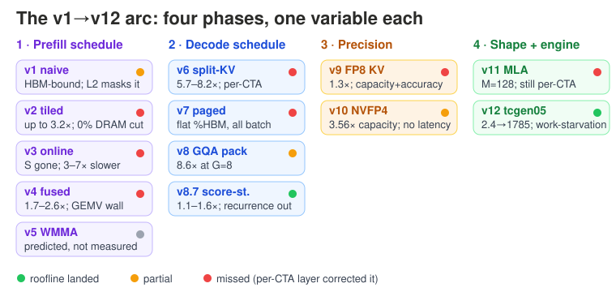

Eight figures for the PMBS@SC26 draft. Six restyled in the house palette (all text as real <text> elements); Figs 4–5 are the original data-accurate charts — their bar geometry encodes exact measured numbers, so they were not redrawn. Drop any file over figures/<name>.svg in the paper repo; basenames are unchanged.
Fig 1 v12-related-work-landscape.svg · 760×300 · full width restyled

Fig 2 v1-v12-arc-summary.svg · 760×360 · full width restyled